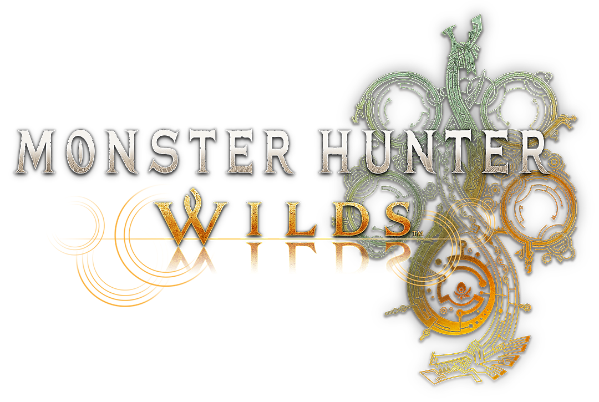

One meaning for each measure
Partner, title and submission grains are explicit. “First-pass approval” has a numerator, denominator and owner, so teams can discuss the result rather than the SQL.
Independent portfolio · PlayStation Partners Platform · London
When a release slows down, the answer should be traceable.
I’m Firman Insan Muhammad. You can call me VIM. This is how the data platform I built at Lifepal can inform a trusted analytics layer for PlayStation’s partner publishing workflow.

A game launch can be cinematic. Its publishing metrics still need unglamorous, dependable definitions.
A GAME WORLD / A DATA QUESTION
Monster Hunter Wilds is a real Capcom title on PlayStation. It gives this portfolio a visual setting for the partner publishing question. The partner names, title records and results in the NEXUS reference are entirely fictional.
 PlayStation heritageSupplied visual reference; this is an independent portfolio, not an official Sony or Capcom site.
PlayStation heritageSupplied visual reference; this is an independent portfolio, not an official Sony or Capcom site.Footage: Capcom’s official Monster Hunter Wilds launch trailer. Video loads when you press play.
NEXUS · built at Lifepal
At Lifepal, I led NEXUS: a governed lakehouse with PostgreSQL CDC, Azure Databricks, Delta, dbt models and quality gates. It turned changing source data into trusted datasets for business teams.
For PlayStation Partners Platform, the relevant question is how a partner submission becomes a decision-ready measure: which titles cleared review first time, which need another attempt, and which are approved but not yet published? The synthetic example below follows that path. A duplicated event should not get a second vote.
PlayStation’s role calls for greenfield dbt standards, dimensional modelling, quality, observability and close work with business teams. NEXUS gives me the foundation; this reference shows the analytics product I would build on top.
Partner, title and submission grains are explicit. “First-pass approval” has a numerator, denominator and owner, so teams can discuss the result rather than the SQL.
Source keys, relationships, accepted statuses, no negative review time and no title fanout are checked in the runnable dbt build.
A partner-facing mart and dbt exposure connect the model to a possible dashboard. The synthetic comparison highlights where teams should investigate review or publication delays.
The role-specific route uses synthetic publishing data. It carries NEXUS patterns into dbt: source contracts, typed staging, one-row-per-title aggregation, dimensional marts and tests before consumption.
Partner, title, review and publication events.
Types and status values have one home.
Separate streams before joining them.
Measures fit the business question.
Tests and consumers stay connected.
Local reference: dbt Core + DuckDB. The production warehouse and BI tool for PlayStation would be chosen with the team; this portfolio does not connect to SIE systems.
These are the rules for the synthetic partner data product. Each one connects a business phrase to a model grain or a release check.
FPA = approved on attempt 1 / submitted titles
Count each title once. The denominator excludes titles that have not been submitted. The synthetic result is 3 / 6 = 50%.
mean review hours = Σ(reviewed − submitted) / Nreviewed
Use reviewed attempts as the denominator. Keep pending attempts out until their clock stops.
|title outcomes| = |titles|
Aggregate submissions and storefront publications separately, then join at title grain. A singular dbt test enforces the row count.
freshness = now − max(published event time)
A job finishing is not the same as a fresh answer. In production, this would be measured at the serving boundary, with agreed thresholds.
These are synthetic partners and titles. Choose one to see how the same governed measures can guide a real stakeholder conversation without claiming to know the cause of a delay.
SELECT A SYNTHETIC PARTNER
Loading model output…
MODEL OUTPUT
Partner-level measures are generated from mart_partner_publishing.
This chart reads the exported dbt result. No PlayStation partner, player, financial or operational data appears here.
This public repository includes synthetic seeds, dbt sources, staging, a snapshot, macros, facts and dimensions, a partner mart, generic and singular tests, and an exposure. The code window reads repository source; the metric contract is a separate, versioned design reference.
python -m pip install -r requirements.txt
dbt build --profiles-dir .dbt runs the seeds, models, snapshot and tests against DuckDB. GitHub Actions repeats the build and checks that this site's examples match the source.
Open the repository ↗Requires Python 3.12. DuckDB is local; no PlayStation account is needed.Loading source code…The most useful metric is the one a partner team trusts and acts on. I would start with definitions and workflow, then choose the warehouse and dashboard details with the people who use them.
A title, submission attempt and storefront publication are different things. Keeping those grains separate prevents a second review or region from quietly inflating a KPI.
Agree with partner operations on status semantics, late corrections and calendar cutoffs before a dashboard becomes a source of truth.
Tests, exposures and documentation matter when someone owns the follow-up. The synthetic workflow shows the checks; production would need thresholds and response paths agreed with the team.
A conversation worth having
VIM · Senior Data Engineer · London. I would welcome a conversation about the Senior Analytics Engineer role and the decisions behind this reference.